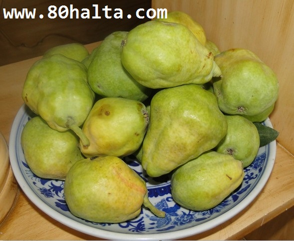

ئالدىنقى يازما
ئالدىنقى يازما كېيىنكى يازما
كېيىنكى يازما
قەشقەرنىڭ ئېسىل يەرلىك مېۋىسى-قوتۇر ئامۇت
ئاپتور:Birzat ۋاقتى:2011-08-22


بۇ ئامۇت ئائىلىسىگە تەۋە مېۋىلىك دەرەخ - قوتۇر ئامۇتنىڭ مېۋىسى بولۇپ ئاساسلىقى قەشقەرنىڭ ئەتراپىدىكى ناھىيە-يېزىلىرىنىڭ ھەر بىر ئائىلىلىرىدە دېگۈدەك باغ-ھويلىلىرىدا ئەھيا قىلىدىغان بىر تۈرلۈك يەرلىك مېۋە سورتى. بۇ مېۋە يەنە خوتەن ۋە ئاتۇشنىڭ قىسمەن جايلىرىدىمۇ ئەھيا قىلىنىدۇ. قوتۇر ئامۇت ئاساسەن 8-9-ئايلاردا پىشىدۇ. بۇ مېۋە تەمىنىڭ شىرىنلىكى، شىپالىق ۋە ئوزۇقلۇق رولىنىڭ يۇقۇرى بولىشى بىلەن خەلقىمىزنىڭ ئەتىۋارلاپ ئىستىمال قىلىشىغا ئىرىشكەن. قوتۇر ئامۇت ھەققىدە كىتاب-ماتىرياللار ۋە تور تۇنياسىدا ھېچقانداق مەلۇمات بىرىلمىگەن بولغاچقا بۇنىڭ ئوزۇقلۇق ۋە شىپالىق رولى ھەققىدە ئۆز تەجىربەم ئاساسىدا بايقىغانلىرىمنى تورداشلار بىلەن ئورتاقلاشماقچىمەن. بۇ ھەقتە يەنىمۇ كۆپ ئۇچۇر -مەلۇماتلاردىن خەۋەردار كىشىلەرنىڭ 80خالتا بلوگىغا ئىشتىراك ئېتىشىنى تەۋسىيە قىلىمەن.

قوتۇر ئامۇتنىڭ تەبئىتى: مۆتىدىل.
بۇ مېۋە ئادەتتە ھەر خىل ياشتىكى كىشىلەرنىڭ مىزاجىغا ياقىدىغان بولۇپ بالىلار ۋە ياشانغانلارغا ياخشى ئوزۇق بولىدۇ. ئۈچەينى سىلىقلاپ تەرەتنى راۋان قىلىش، يۈز تېرىسىنى پارقىرتىش، يۈرەك-جىگەرنىڭ مىزاجىنى تەڭشەش، ئومومىي بەدەننى قۇۋۋەتلەش، بەدەننى سەمىرتىش، قان كۆپەيتىش قاتارلىق رولى بار. بۇ مېۋىنىڭ ئالاھىدە بىر رولى شۇكى: قەۋزىيەت بولغانلار ئىستىمال قىلىپ بەرسە چوڭ تەرەتنى مۇلايىم قىلىپ، راۋانلاشتۇرۇپ بىرىدۇ. ئىچى سۈرۈپ چوڭ تەرىتى قاتمىغانلار ئىستىمال قىلسا ئۈچەي خىزمىتىنى ياخشىلاپ تەرەتنى قاتۇرىدۇ.
ئەكىس تەسىرى: بۇ مېۋە ئىنتايىن قۇۋۋەتلىك بولۇپ تەستىرەك ھەزىم بولىدۇ. شۇڭا تولۇق پىشىمىغانلىرىنى ئىستىمال قىلمىغان ياخشى. ياشانغان ۋە بالىلار بۇنىڭ ئوبدانراق يۇمشاپ پىشقانلىرىنى ئىستىمال قىلسا ھېچ زەرەرى يوقتۇر.
بۇ مېۋىدىن مۇراببا تەييارلاپ قىشىچە ئىستىمال قىلىپ بەرسىمۇ يۇقۇرقىدەك تەسىرلەرنى بىرىدۇ.
تەييارلاپ يوللىغۇچى: بىرزات
مەنبە: 80خالتا بلوگى ./asp_565.html


 يازما مەنبەسى: بېكەت ئەسىرى
يازما مەنبەسى: بېكەت ئەسىرى خەتكۈش: قوتۇر ئامۇت قەشقەر مېۋە شىپالىق
خەتكۈش: قوتۇر ئامۇت قەشقەر مېۋە شىپالىق  مۇناسىۋەتلىك يازمىلار:
مۇناسىۋەتلىك يازمىلار:
 قايتۇرما
قايتۇرما ]
]ساپما كەش، لاتا خەي قاتارلىق بىر قىسىم پاشنىسىز، چەمى تۈز ئاياغلار يۇمشاق، يەڭگىل ھەم ئەپلىك بولغاچقا، كىشىلەر بۇ خىل ئاياغلارنى كىيىشنى ياخشى كۆرىدۇ. لېكىن بۇ خىل ئاياغنى ئۇزاق ۋاقىت كىيىپ ئادەتلىنىپ قالسا، سالامەتلىككە زىيانلىق.
ئارا پاشىنلىق ئاياغ ئادەم بەدىنىنىڭ ئېغىرلىق مەركىزىنى ئەڭ ياخشى سەۋىيەدە ساقلاپ، ئېغىرلىقنى ئىلمى ئۇسۇلدا پۇت بارماقلىرىغا تەكشى تەقسىملەپ، سۆڭەك، تارىمۇش ۋە ئۇمۇرتقا تۆۋرىكىنىڭ شەكلىنى نورمال ساقلايدۇ. پاشنىسى يوق، تېگى تۈز ئاياغلارنى كىيگەندە بولسا، ئىغىرلىقنىڭ تارقىلىشى تەكشى بولمايدۇ، ئادەم بەدىنىنىڭ نورمال بەدەن ھالىتى ۋە ئېغىرلىق مەركىزى ئۆزگىرىپ كېتىدۇ. شۇڭا بۇ خىل ئاياغنى كىيگەندە ئادەم ئاسانلا ھەرغىنلىق ھىس قىلىدۇ، ۋاقىت ئۇزارغانسېرى پۇت ئېگىلىپ، ئومۇرىتقىنىڭ ھەر قايسى قىسىملىرىغا تارقالغان ئېغىرلىق تەكشى بولماسلىق تۈپەيلىدىن نورمال بەدەن ھالىتى ئۆزگىرىپ كېتىدۇ.
بۇ دېگەنلىك ھەرگىزمۇ ئاياغنىڭ پاشنىسى قانچە ئىگىز بولسا، شۇنچە ياخشى دىگەنلىك ئەمەس، بەك ئىگىز پاشنىلىق ئاياغلارنىڭمۇ بەدەنگە زىيىنى بار. شۇڭا نورمال ئىگىزلىكتىكى ئاياغنى تاللاش ئەڭ ئاقىلانىلىك.